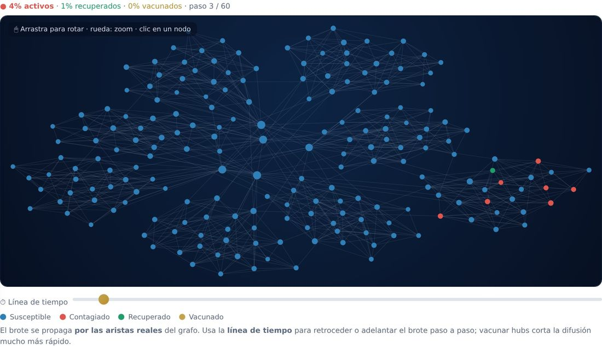
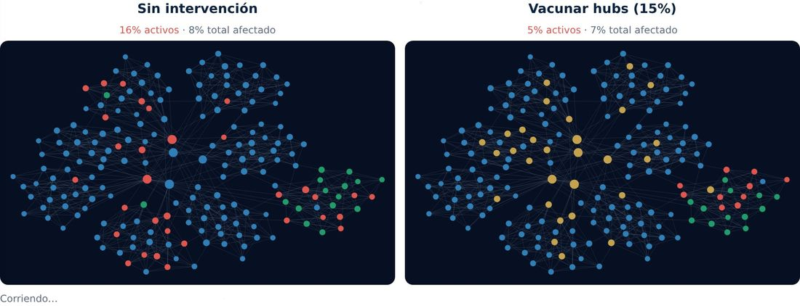
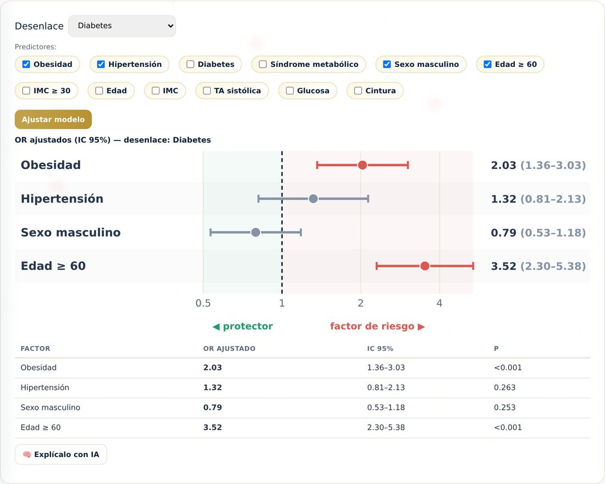
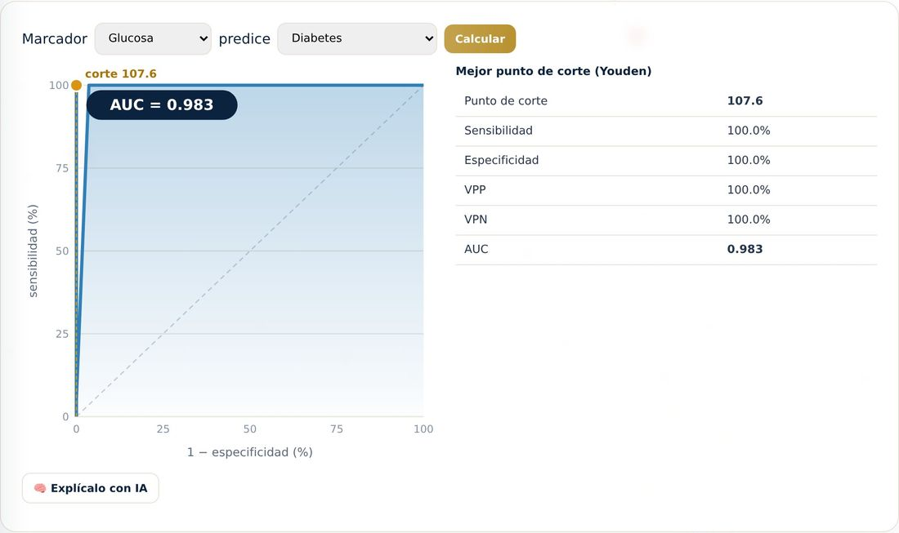
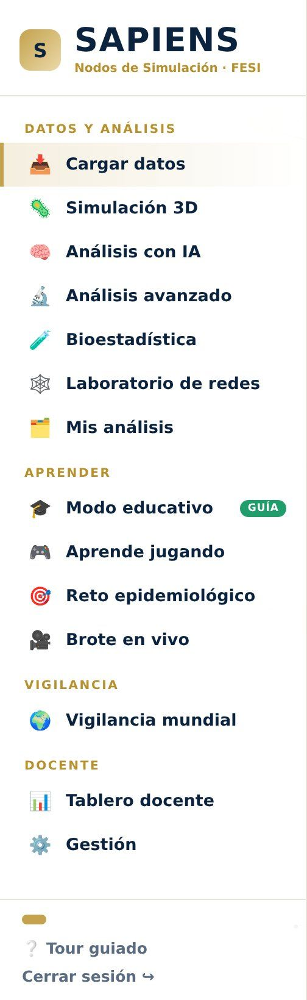
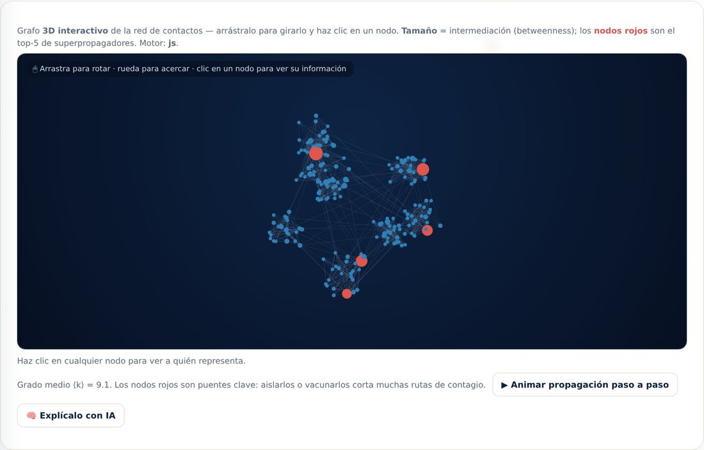
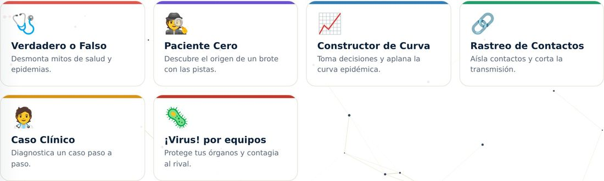
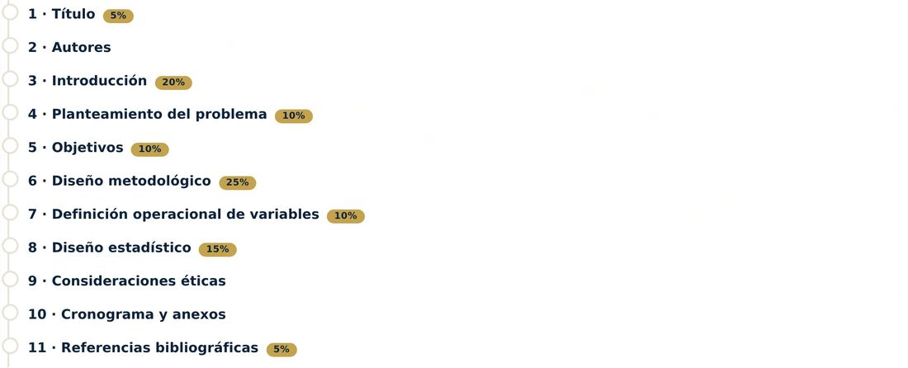

Sistema de Análisis Poblacional e Inteligencia Epidemiológica mediante Nodos de Simulación
Convierte los datos de salud de cualquier población en un laboratorio vivo. Alumnos y profesores conversan con inteligencia artificial para obtener, analizar y simular el comportamiento epidemiológico de comunidades enteras: modelan brotes con enjambres de miles de agentes, exploran el gemelo digital de cada persona, detectan aberraciones, miden desigualdades en salud y diseñan intervenciones sustentadas en evidencia científica real. Del dato individual a la decisión poblacional, en un solo lugar.
🧠
Pregunta en español a PUM-AI y obtén análisis, gráficas e informes con fundamento clínico.
🦠
Simula campañas de vacunación y observa, arquetipo por arquetipo, cómo responde la población.
📄
Genera un informe epidemiológico con IA y expórtalo a PDF.
Herramienta con fines educativos para la formación en epidemiología.
Conoce SAPIENS ↓
Inicia sesión
Entra con la cuenta que te dio tu profesor o el administrador de la sección.
Aprende epidemiología con una inteligencia artificial que te guía — no que hace el trabajo por ti.
Un recorrido de 2 minutos por la plataforma · desliza para conocerla
Empezar el recorrido ↓
01 El reto
“El módulo de Métodos de Investigación Epidemiológica no se aprende de memoria: se aprende investigando, equivocándose y volviendo a intentar.”
Pero rara vez hay una población real con la que practicar, ni tiempo para simular un brote, ni retroalimentación inmediata cuando escribes tu protocolo. SAPIENS resuelve exactamente eso.
02 La propuesta
Un laboratorio vivo de poblaciones enteras
SAPIENS convierte los datos de salud de cualquier comunidad en un laboratorio interactivo. Obtienes, analizas y simulas el comportamiento epidemiológico de miles de personas, conversando con PUM-AI en español. Del dato individual a la decisión poblacional, en un solo lugar.
0
personas en la cohorte demo
0
herramientas de bioestadística
0
análisis de redes de contacto
0
dinámicas para aprender jugando
Simulación en vivo · red de contagio gira ↻ · el scroll la anima
🧠PUM-AI está analizando la propagación…
0%población afectada
0pico de activos
0.0R₀ estimado
03 Lo que la hace distinta
IA que te forma, no que te hace la tarea
Cuando pides ayuda para redactar tu protocolo, PUM-AI no te da la respuesta de inmediato. Te reta a pensar y a escribir tu propia versión; solo si ya lo intentaste te ofrece un borrador para adaptar. Así aprendes de verdad.
1
Te pregunta a ti
Primero te devuelve preguntas guía y los criterios de la rúbrica FESI para que tú construyas la idea.
2
Te deja intentarlo
Escribes tu propia versión. La IA te orienta con ejemplos genéricos, sin resolvértelo.
3
Te da un modelo
Si tras intentarlo sigues atorado, te entrega un borrador que debes personalizar con tu tema y datos.
Y en cada cálculo o gráfica, PUM-AI te explica cómo se obtiene el resultado, no solo qué significa.
04 Simula poblaciones enteras
Brotes con miles de agentes, en 3D
Lanza un brote sobre una red de contactos real y míralo propagarse nodo por nodo. Vacuna a los superpropagadores, corta puentes entre comunidades y compara estrategias lado a lado. Todo con una línea de tiempo que puedes adelantar y retroceder.
Gira el grafo en 3D, haz clic en cualquier persona y descubre a quién representa dentro de la epidemia.

Enjambre 3D: el contagio corre por las aristas reales de la red de contactos.

Comparador lado a lado: ¿qué contiene mejor el brote?
05 Tus datos o los nuestros
Sube tu propia base y analízala
Practica con la cohorte de demostración o carga tu propio CSV — se procesa en tu navegador, no sale de tu equipo. Después ejecuta bioestadística real: razones de momios y riesgo, regresión logística, curvas ROC, R₀/Rₜ, tasas estandarizadas, Mantel-Haenszel y más.
Cada resultado viene con gráficas claras y con la opción de que PUM-AI te lo explique.

Regresión logística: OR ajustados con su intervalo de confianza.

Curva ROC con AUC y mejor punto de corte (Youden).
06 Un recorrido por sus apartados
Todo lo que necesitas, en un menú

El menú agrupa datos, aprendizaje, vigilancia y herramientas docentes.
🧠
Análisis con IA
Pregunta en español y obtén cifras, gráficas e informes con fundamento clínico.
📊
Bioestadística
Nueve herramientas clásicas y avanzadas sobre tu cohorte.
🕸️
Laboratorio de redes
Superpropagadores, comunidades, umbral epidémico e inmunización.
🎮
Aprende jugando
Seis dinámicas con insignias y tablero para el profesor.
🌎
Vigilancia mundial
Datos epidemiológicos del mundo en vivo, comparables con tu cohorte.
📄
Modo educativo
Arma tu protocolo guiado por la rúbrica oficial de la FESI.

Red de contactos: los nodos rojos son superpropagadores.

Aprende jugando: rastreo de contactos, paciente cero, ¡Virus! y más.
07 Alineado a la FESI
Tu protocolo, guiado por la rúbrica oficial
El modo educativo sigue, etapa por etapa, la Rúbrica de Protocolo de Investigación de la FES Iztacala: título, introducción, planteamiento, objetivos, diseño metodológico, variables, diseño estadístico, ética y referencias en formato Vancouver.
Avanzas con acompañamiento, marcas cada etapa como revisada y al final exportas tu protocolo listo para entregar.

Cada etapa del protocolo con su peso y sus criterios de la rúbrica.
08 El plus
Guarda el progreso de tus investigaciones
Tu trabajo no se pierde al cerrar sesión. SAPIENS guarda tus análisis, tu protocolo y tus resultados de las dinámicas, para que retomes justo donde te quedaste — y para que tu profesor pueda revisar tu avance.
💾
Mis análisis
Cada cálculo, gráfica e informe que generas queda guardado y a la mano.
↩️
Continúa después
Retoma tu cohorte y tu protocolo en la sesión siguiente, sin empezar de cero.
🎓
Roles y acompañamiento
Alumno, profesor y administrador: cada quien ve lo que le corresponde.
SAPIENS
Del dato individual a la decisión poblacional. Empieza tu formación.
Facultad de Estudios Superiores Iztacala · UNAM — Herramienta con fines educativos.
↩ Tienes una sesión guardada
Inicia tu análisis
Carga los datos y las guías clínicas
Sube la base poblacional y las guías de práctica clínica que quieres inyectar; la IA construirá el análisis, la simulación y el informe con tus datos. ¿Solo quieres ver cómo funciona? Usa la cohorte de demostración.
Demo: genera 3,000 personas coherentes con Python en vivo.
Procesando la cohorte…
Python (Pyodide) lee los datos, calcula distribuciones y siembra el enjambre.
Elige qué hacer con tus datos
¿Qué quieres hacer con la cohorte?
Cargaste — personas. Elige una vía; puedes volver y cambiar cuando quieras.
🦠
Simulación del enjambre
Proceso MiroFish animado y un enjambre 3D navegable donde simulas campañas de vacunación y brotes, y ves cómo responde la población arquetipo por arquetipo. Incluye gemelo digital e informe.
Abrir simulación →
🧠
Análisis con IA (dataset + guías)
Conversa con PUM-AI para analizar el dataset con base en las guías de práctica clínica que cargaste: prevalencias, brechas de atención, grupos de riesgo y recomendaciones. Con informe exportable a PDF.
Abrir análisis →
Enjambre de simulación social · Proceso MiroFish
¿Cómo funciona el enjambre, paso a paso?
MiroFish convierte tus documentos y tu cohorte en un mundo de miles de individuos que interactúan para predecir un comportamiento. Al concluir la etapa 5 se revela el laboratorio 3D con los resultados y el informe.
Etapa 1/5 · Grafo de conocimiento
0%
Vacunados
0%
Contagiados
0%
Graves
—
R efectiva
🖱 Arrastra para rotar · rueda para zoom · clic en un punto = gemelo digital
Semana 0
Cobertura de campaña40%
Nivel de desinformación30%
Densidad de contacto50%
Velocidad1.0×
Arquetipos (de tus datos)
Provacuna
Indeciso
Renuente
Vulnerable
Estado ante COVID-19
Susceptible
Contagiado (leve)
Grave
Recuperado
Vacunado
El enjambre simula una epidemia (COVID-19). El movimiento es el contacto social; al acercarse dos individuos se contagian o se influyen sobre vacunarse. Quién se complica (grave) depende de sus comorbilidades, edad, sexo y predisposición genética. Haz clic en un punto para ver su historia clínica y entrevistarlo.
Planeación con IA
¿Qué sigue después del análisis?
Pregúntale a PUM-AI cómo pasar del diagnóstico a la acción, a partir de estos datos y la simulación: diseñar un estudio de investigación, planear una campaña de prevención, coordinar una intervención poblacional (vacunación, desparasitación, actividad física) o actividades comunitarias (huertos, pláticas, cultura).
📚 Evidencia científica y herramientas
Busca artículos reales (Europe PMC / PubMed) para respaldar tu plan, o levanta datos con una encuesta.
Comparador de escenarios
Proyección de la curva de contagios con y sin campaña, usando la cobertura objetivo actual (40%). Ajusta el slider de cobertura y vuelve a comparar.
💡 ¿Quieres el informe escrito por PUM-AI con estos resultados y exportarlo a PDF? Ve a Análisis con IA. Próximo: mapa coroplético por colonia.
Análisis con IA
Pregúntale a PUM-AI sobre tu dataset
PUM-AI responde usando las estadísticas calculadas por Python y el texto de tus guías de práctica clínica.
Cascada de atención en diabetes
Del total de la cohorte: cuántos tienen DM2, están diagnosticados, en tratamiento y controlados. La brecha entre barras es dónde se pierde la atención.
GEMELO DIGITAL · INDIVIDUO SIMULADO
Individuo
×
🗣 Entrevista al paciente (IA)
Panel de gestión
Administración de usuarios y grupos
Da de alta usuarios y organiza tus grupos. Los alumnos que registres podrán entrar con el correo y la contraseña que definas.
➕ Dar de alta usuario
Registra un nuevo usuario de esta sección.
👥 Mis grupos y guías clínicas
Crea un grupo, comparte su código y define las guías de práctica clínica que tus alumnos deben usar.
Usuarios registrados
Cargando…
📋 Tablero de encuestas y respuestas
Cuántas respuestas ha capturado cada encuesta y sus prevalencias en vivo. Se actualiza al pulsar el botón.
Pulsa «Actualizar» para cargar.
Vigilancia epidemiológica mundial
El mundo en un mapa
Datos públicos reales de vigilancia (fuente disease.sh, agregada de la OMS y la Universidad Johns Hopkins). Compara la carga de COVID-19 entre países y conecta lo global con tu cohorte local. Son cifras acumuladas de referencia con fines educativos.
Top 10 países — casos / millón
Cargando datos mundiales…
🔎 Haz clic en un círculo del mapa para ver el detalle del país. El tamaño y el color representan el indicador elegido.
⚖ Comparar el mundo con mi cohorte
Contrasta los datos reales de un país con lo que predijo tu simulación local. Así el alumno ve la brecha entre el modelo y la realidad.
Carga una cohorte y corre una simulación en el enjambre; luego pulsa «Comparar».
Porcentaje de consultas por enfermedad tipo influenza (%ILI) semana a semana. Complemento estacional a los datos de COVID-19.
Cargando serie de influenza…
📰 Noticias epidemiológicas — fuentes fiables
Titulares recientes sobre brotes, vacunación y salud pública, de agencias y medios de referencia. Se actualiza al abrir la sección.
Cargando noticias…
Fuentes: disease.sh (OMS / Johns Hopkins · CDC ILINet) · Noticias vía Google News de fuentes como OMS, OPS, CDC, ECDC y medios de referencia.
Modo educativo
Protocolo de investigación científica, paso a paso
Guía basada en la Rúbrica de Protocolo de Investigación del Módulo de Métodos de Investigación Epidemiológica (Carrera de Médico Cirujano, FES Iztacala). Cada sección muestra sus criterios y su porcentaje de evaluación; escribe tus notas, pregúntale dudas a PUM-AI y al final descarga tu protocolo armado.
Encuestas y captura
Genera una encuesta y construye tu base de datos
PUM-AI diseña una encuesta a partir de tus guías clínicas. Descárgala en PDF para aplicarla en campo o usa el formulario digital; las respuestas capturadas se convierten en una cohorte que puedes analizar y simular.
1 · Diseña la encuesta con IA
Describe a quién y para qué. PUM-AI propondrá las preguntas alineadas a las guías (HTA, diabetes, factores de riesgo COVID, sociodemográficos).
2 · Revisa las preguntas
3 · Captura una respuesta (formulario digital)
Llena una entrevista a un paciente/familia. Cada respuesta guardada se suma a tu base de datos.
Encuestas guardadas
Aún no has guardado encuestas.
Epidemiología de redes · nodos
Laboratorio de redes de contacto
La población como una red: nodos (personas) y aristas (contactos). Analiza superpropagadores, umbral epidémico, inmunización, comunidades y difusión de opiniones — el motor detrás del enjambre.
Laboratorio de bioestadística
Análisis estadístico avanzado
Estadística epidemiológica real sobre los datos individuales de tu cohorte: asociación, regresión, pruebas diagnósticas, modelado, estandarización, análisis espacial y confusión — con resultados visuales e interpretación por IA.
💬 Pregúntale al dataset (lenguaje natural)
Haz una pregunta sobre tus datos y PUM-AI responde usando las estadísticas de la cohorte.
Análisis avanzado
Herramientas de epidemiología aplicada
Cuatro instrumentos que usan tu cohorte: detección de brotes, equidad en salud, impacto de intervenciones y propagación en el tiempo.
🚨 Detector automático de brotes (EARS C1)
Vigilancia de aberraciones: compara los casos de cada semana contra su línea de base (media + 3 desviaciones de las semanas previas). Cuando se supera el umbral, se dispara una alerta — el mismo principio de los sistemas reales de vigilancia sindrómica.
⚖️ Análisis de equidad en salud
Cruza la marginación de cada colonia con la prevalencia de enfermedad para medir la desigualdad: razón de tasas entre las colonias más y menos marginadas, e índice de concentración.
💉 Estimador de impacto de intervenciones
Proyecta cuántos eventos evitarías y a cuántas personas tendrías que intervenir por cada caso evitado (NNT), según la cobertura y la efectividad.
🔥 Mapa de calor temporal — propagación semana a semana
Observa cómo el brote se mueve por las colonias a lo largo del tiempo. Usa ▶ para animar.
Semana 0
Simulacro de respuesta · en vivo
Brote en vivo para el aula
Un simulacro colaborativo: el profesor abre una sesión y cada alumno, desde su dispositivo, decide la respuesta de salud pública cada semana. Las decisiones del grupo cambian el rumbo de la epidemia en tiempo real.
👩🏫 Soy profesor — abrir sesión
Crea una sala; comparte el código con tu grupo.
🙋 Soy alumno — unirme
Escribe el código que te dio tu profesor.
Sala
Semana 0 / 12
Tu decisión de esta semana
Control del profesor
Aprende jugando
Dinámicas de epidemiología
Aprende jugando: cada dinámica pone a prueba un concepto clave. Gana puntos y desbloquea insignias.
Panel del profesor
Tablero docente
Progreso de tus alumnos: análisis, retos, dinámicas e insignias. Genera con IA un plan de reforzamiento por alumno.
🎛️ Dinámicas habilitadas para mis alumnos
Activa o desactiva las dinámicas que verán tus alumnos en «Aprende jugando».
👥 Progreso por alumno
Cargando…
Historial de resultados
Mis análisis
Aquí quedan guardados los informes, autoevaluaciones y análisis que generas. Se guardan automáticamente al producirlos.
Cargando…
Aprendizaje en vivo
Reto epidemiológico
Un juego de preguntas en tiempo real, estilo concurso. El profesor lanza el reto y los alumnos compiten desde su dispositivo; PUM-AI ayuda a crear las preguntas y a analizar los resultados.
👩🏫 Profesor — mis retos
Crea cuestionarios (con ayuda de PUM-AI) y lánzalos en vivo.